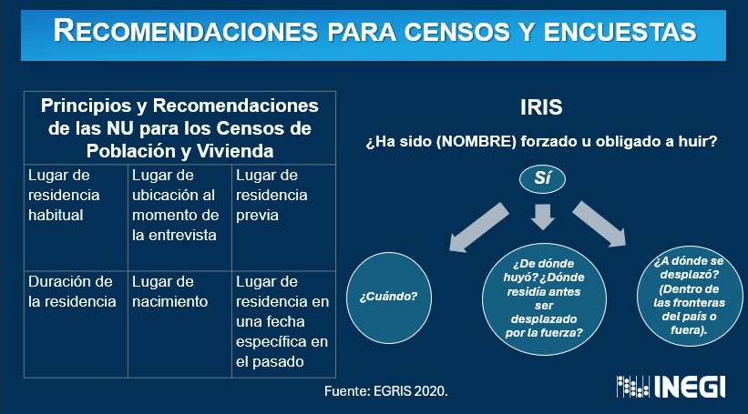

Recomendaciones para mejorar el uso de los censos para recopilar datos sobre desplazados internos.
Basándose en los Principios y recomendaciones de las Naciones Unidas para los censos de población y vivienda, el IRIS recomienda añadir preguntas específicas para captar mejor la información sobre el desplazamiento interno.

Fuente: Naciones Unidas, IRIS
Para los desplazados internos (IDPs), el IRIS recomienda que:
Las fuentes de datos alternativas, como los macrodatos y las técnicas relacionadas, como la integración de datos, también pueden presentar oportunidades importantes para mejorar la calidad de las estadísticas sobre desplazados internos.
Los datos recopilados de diferentes fuentes servirán para distintos propósitos y tendrán sus propias limitaciones y lagunas. Cuando sea posible combinar datos de diferentes fuentes, los datos integrados pueden ofrecer un panorama más completo.
Por lo general, los datos administrativos se pueden combinar con datos de encuestas, o se pueden combinar dos o más fuentes administrativas. El método de integración aplicado depende del entorno de datos específico que prevalezca en un país determinado. Donde existen los Números de Identificación Personal (PINs), este proceso puede facilitarse más fácilmente.
En general, dos métodos principales de integración de datos son
relevantes para las estadísticas de desplazamiento forzado, a
saber:
1. la vinculación de registros y
2. la concordancia estadística.
Las siguientes son las recomendaciones clave de los Principios de la ONU que rigen las actividades estadísticas internacionales.
Adoptar un marco de aseguramiento de la calidad para la organización.
Esforzarse continuamente por mejorar la calidad y transparencia de las estadísticas mediante la introducción de innovaciones metodológicas y de sistemas.
Mejorar la competencia profesional del personal alentándolos a asistir a cursos de capacitación, publicar artículos científicos y participar en seminarios y conferencias.
Documentar y publicar los conceptos, definiciones, clasificaciones y metadatos utilizados por la organización.
Documentar cómo los datos son recopilados, procesados y difundidos por la organización (incluyendo información sobre los mecanismos de edición aplicados a los datos de los países y los métodos de agregación para calcular estimaciones regionales y globales).
Dar crédito, en la difusión de estadísticas internacionales, a la fuente original y utilizar los estándares de cita acordados al reutilizar estadísticas originalmente recopiladas por otros.
La independencia de una agencia estadística es fundamental para producir datos creíbles y estadísticas oficiales. Esto es particularmente importante para los datos sobre refugiados, desplazados internos (IDP) y apatridia, dada su sensibilidad política.
Consulta los criterios para garantizar la independencia de las agencias estadísticas.
➡️ Módulo 4. Metodología
Has llegado al final de este módulo.
Esperamos que lo hayas disfrutado y te haya ayudado a comprender mejor
las ventajas y desventajas de las diferentes fuentes de
datos.